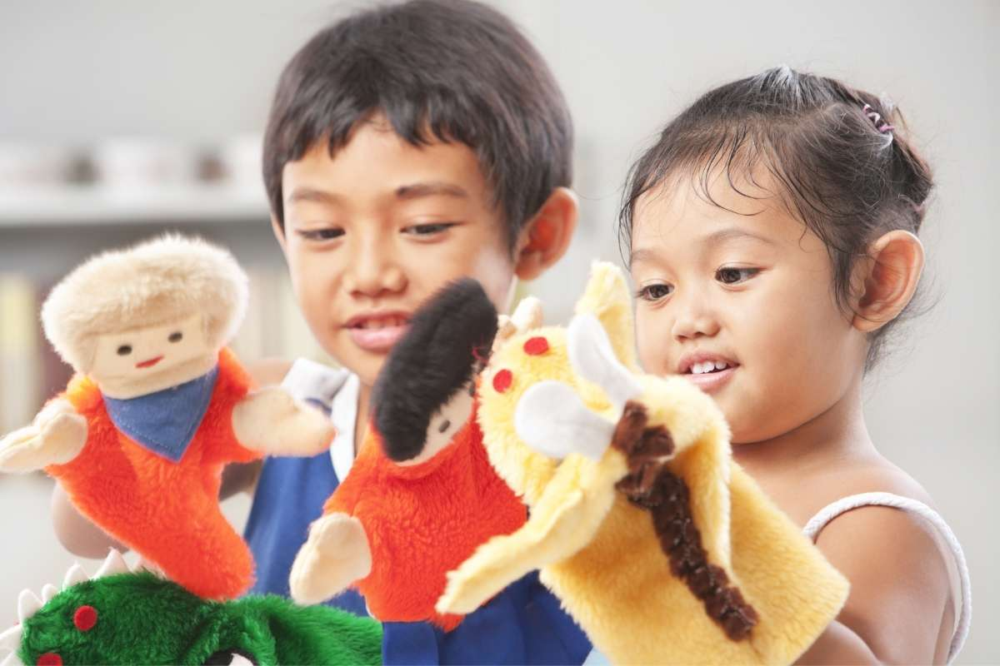

Introduction
Drama and puppetry offer rich, imaginative spaces where young children explore roles, feelings, and real-world experiences through play. These forms of expression allow children to safely test ideas, develop empathy, and gain control over situations they may not fully understand. Dramatic play is a powerful outlet for self-expression and meaning-making, while puppetry introduces storytelling, voice, and movement in a captivating way. Both experiences support emotional resilience and social development. Whether pretending to be firefighters, animals, or caregivers, children use drama and puppets to engage with the world creatively and confidently.
Theories and Perspectives
Creative dramatics in early childhood is deeply grounded in Vygotsky's sociocultural theory, which emphasizes learning through interaction and imagination. Children develop cognitively when they engage in symbolic play with others, using language and roleplay to navigate their environment. Anderberg and Kratochvil (2005) also highlight how drama builds communication skills and helps children make sense of themselves and the world around them. Puppetry and drama are essential components of process-oriented creative learning, encouraging children to take creative risks and express their internal worlds in imaginative, socially constructive ways.
Resources, Materials, and Digital Tools
Dramatic play and puppetry thrive in well-prepared environments. Educators can provide dress-up clothes, roleplay props (e.g., cooking sets, stethoscopes, costumes), and flexible furniture that encourages storytelling and performance. Puppet resources can include hand puppets, sock puppets, stick puppets, and glove puppets — or materials for children to make their own. Digital tools such as video recordings or story creation apps (e.g., Puppet Pals, Toontastic) offer creative extensions. Books and felt board stories can serve as dramatic inspiration, while puppet theatres (homemade or digital) invite collaborative play and performance.
Learning Experiences
Puppet Emotions Circle (Age 3–5)
Children are invited to choose from a variety of hand puppets representing different facial expressions. In a circle time setting, each child introduces their puppet and shares a story or feeling the puppet is experiencing (e.g., "This is Milo. He's feeling shy today."). This encourages children to express and regulate emotions through the safety of the puppet character. The educator supports emotional vocabulary and active listening.
Story Drama from a Book (Age 6–8)
Using a familiar picture book like We're Going on a Bear Hunt, children re-enact the story using props and sound effects. They collaborate to assign roles, recreate scenes, and invent new parts of the story. The teacher facilitates rather than directs, supporting improvisation and cooperative storytelling. This activity builds sequencing, confidence, empathy, and group communication skills.